Building Pictures with Racket
Building Pictures with Racket
By Rowan Weir, Daniel Barnas, Allan Schougaard
Introduction
The 2htdp/images and picturing-programs libraries provide built-in functions and primitives that allow you to produce simple graphics and even build complex
illustrations.
The functions available in these libraries can be placed into a few broad categories for easier understanding and use.
Simple Shapes
Let's start with a basic circle, one of the easiest shapes to create.
A circle only requires three parameters: size, mode, and color.
We will see these parameters and this format repeated in the construction of other shapes, but what differentiates a circle is that the size is defined by the radius.
The radius is given as a number, denoting how many pixels used, which is typical for how size is defined in Racket.
The mode and color parameters don't change much between shapes, with mode describing whether the circle should be solid or an outline, and color, which we will discuss more in depth a little later.
(circle size mode color) → image
What circle will be created with the following?
(circle 80 "solid" "red")
Try for yourself by clicking this button:
try it
Was this your result?
As expected, the resulting image is that of a solid red circle of radius 25 pixels.
If we switch the mode to "outline," we get the following:
(circle 80 "outline" "red")
Try changing the radius and observe the effect on the circle's size.
Experiment with different colors as well.
The simplicity of circles is that their radius is the same in all directions.
What if instead we wanted to draw an elongated circle, or an ellipse?
The ellipse function is very similar to that of a circle, except that now we need to specify a width and a height.
(ellipse width height mode color)
Let's try creating an ellipse:
(ellipse 200 100 "solid" "pink")
What do we get?
Can you tell which argument corresponds to the width?
Which argument corresponds to the height?
How do the width and height of this ellipse compare to the circles we created above?
Why do you think the circles appear larger?
Polygons
Polygons are shapes with straight sides and angles. Creating them in Dr. Racket involves a process that is similar to how we made our previous rounded shapes. Let's look at some of them in more detail.
Squares
Like a circle, the square function requires a size, a given numerical value that specifies the length of a side.
This is followed by the mode and color, as before.
(square side-len mode color)
Here's an example:
(square 150 "solid" "blue")
And here's what is created:
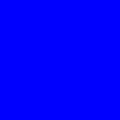
What about a square with a different mode?
(square 150 "outline" "blue")
How does a square with a side length of 150 compare to a circle with a radius of 80?
Which would you expect to be larger? Why?
Rectangles
By now the general outline for the functions used to define shapes should be becoming familiar.
Can you guess what parameters might be needed to create a rectangle?
(rectangle width height mode color)
(rectangle 225 125 "solid" "green")
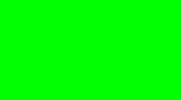
How could you use the rectangle function to design a square identical to the blue square we produced above?
Triangles
There are several varieties of triangles you can create with Dr. Racket.
We are going to cover two: equilateral triangles and right triangles.
Equilateral triangles have three sides of equal length, and whose three angles, by extension, are also equal.
Consequently, to draw an equilateral triangle, you simply specify the desired side length, followed by the usual mode and color parameters.
(triangle side-length mode color)
Examples:
(triangle 150 "solid" "yellow")
A right triangle contains a 90 degree angle.
To construct a right triangle, you need to provide the two side-lengths of the sides adjacent to the right angle.
(right-triangle side-length1 side-length2 mode color)
(right-triangle 200 100 "solid" "orange")
Stars
There are several functions that produce star designs.
A traditional five-pointed star can be created with the star function.
(star side-length mode color)
Here is an example:
(star 100 "solid" "purple")
The radial-star function is a bit more complicated, but produces a design of greater intricacy.
(radial-star point-count inner-radius outer-radius mode color)
The point-count is a numerical value that determines how many points you'd like your star to have.
The inner-radius creates the radius of the body of the star, where the wide end of the points connect.
The outer-radius produces the distance that each outer point of the star reaches.
The mode and color arguments are the same as for all the shapes above.
(radial-star 15 50 25 "solid" "violet")
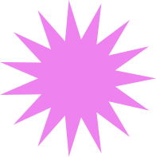
There is one more type of star we can construct, and that is the star-polygon.
The star-polygon is almost exactly the same as a regular polygon, except that it takes one more argument, the step-count.
Instead of each vertex connecting to the one next to it, it instead connects to the vertex that is step-count vertices away, creating a star-like design.
(star-polygon side-length side-count step-count mode color)
Here's an example:
(star-polygon 50 10 3 "outline" "indigo")
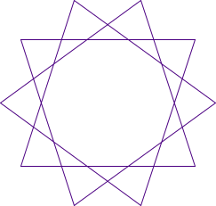
Other Polygons
If you want to construct shapes with more than three or four sides, you can use the regular-polygon function.
With this function, you can construct regular polygons with any number of sides, and of any side length.
This is how we construct pentagons, hexagons, octagons or any other many-sided shape.
(regular-polygon side-length side-count mode color)
(regular-polygon 20 8 "solid" "palegreen")
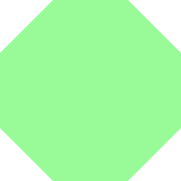
Text
If you want to add words to your images, text can be created with the text function, which requires a string, a font size, and a color.
(text string font-size color)
(text "Earth" 50 "lightskyblue")
More detailed and stylized text formatting can be accomplished by using the text/font function.
It takes a variety of parameters that allow you to control individual aspects of how your text looks.
(text/font string font-size color face family style weight underline?)
(text/font "Mars" 50 "hotpink" #f 'system 'normal 'bold #t)
(text/font "Venus" 50 "gold" #f 'modern 'italic 'normal #f)
Color
So far, the colors we have been using are in the form of strings such as "blue", "red", or "turquoise."
The Dr. Racket color database displays a list of predefined colors you can use when creating graphics.
But what if you want to use a color that hasn't been predefined?
The 2htdp/image library has a function that allows us to create almost any color imaginable.
On your screen, all colors are comprised of varying levels of red, green, and blue.
Dr. Racket, like most computer graphics systems, uses colors created from these three channels.
The value of each color is a whole number that ranges from 0 to 255.
To produce black, you would set each channel (red, green, and blue) to 0.
To produce white, you would set all channels to 255.
Every other possible color is a mix of the three primary colors.
Using the function make-color, we can create a color by specifying these RGB channels.
(make-color red green blue)
Let's see an example:
(circle 75 "solid" (make-color 64 224 208))
Does your result look like this?
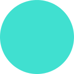
Is the color you expected? Why or why not?
There is a fourth possible input parameter for the function make-color: alpha.
The alpha determines the opacity (or transparency) of the color.
An alpha value of 255 gives you a fully opaque (non-transparent) color.
The closer you get to 0, the more transparent your color becomes.
(make-color red green blue alpha)
If we take our previous circle and add an alpha of 50, what do we get?
(circle 75 "solid" (make-color 64 224 208 50))
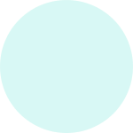
Experiment with different values for red, green, blue, and alpha in the example above to get an idea for how you make different colors.
If you want to make changes to one of Dr. Racket's predetermined colors, the picturing-programs library provides a function that can help.
The name→color function accepts the name of a color, like those found in the color database, and returns the numerical values of the RGB and alpha channels.
Let's try it out with a color from the database.
What values of red, green, and blue make up the color "plum?"
(name→color "plum")
What are the values of red, green, and blue that make up the color "aqua?" Let's find out:
(name→color "aqua")
(make-color 0 255 255 255)
Did it surprise you that aqua is just as blue as it is green?
As you can see, the output of this function looks familiar.
It comes in the form of the make-color function.
(make-color 221 160 221 255)
Why might this format be desirable as a result?
Editing
So far we have learned how to create various shapes and images, but we haven't attempted to alter them in any way.
The htdp/image and picturing-programs libraries provide a large selection of editing tools that we can use on existing images.
Let's start this section by bringing in an image from an external source.
In Dr. Racket, you can insert actual images directly into your code by copying and pasting, or you can use the Insert menu.
To bring an outside image into your program, open the Insert menu at the top of the screen.
From there, select 'Insert Image ...'.
Pick the image file you would like to add from the directory prompt appears.
Upon opening the file, the image should appear where the cursor is located.
Once the image is inside your program, you can move your image to where you need it in your code by copying and pasting as normal.
You can also manipulate the image with one of the functions that allow you to alter or change an image.
Functions in this category include:
- Rotate (spins an image a specified number of degrees)
- Flip (flips an image across an axis)
- Scale (enlarges or shrinks an image)
- Crop (removes part of an image)
- Frame (places a box/frame around an image)
In order to try these out, we'll create an image constant called "moon".
This will make it easier to do different things wth the image without having to copy and paste it each time.
(define moon 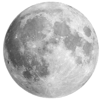 )
It's a good practice to define your images as constants, especially if you are using multiple images in a program.
They can then be combined to create elaborate scenes and pictures.
Let's do the same thing with a few other images we might want to use:
(define sun
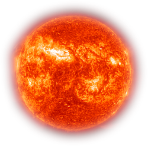
)
(define earth
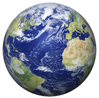
)
(define saturn
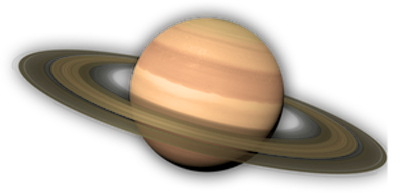
)
(define neptune
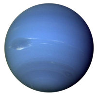
)
(define venus
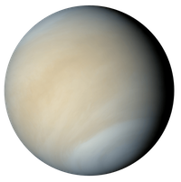
)
From now on in our code, we can refer to any of these images by the constants assigned.
But before we learn more about these editing functions, let's talk about how images can serve as arguments to functions.
In this case, we will use the constant we created up above with the image-height function.
Image-height returns the height of an image in pixels.
(image-height moon)
Following the format used for image-height, use the image-width function to obtain the width of the circle in pixels.
How does the result compare to the height of the image?
Is this what you expected?
Why or why not?
If a function takes an argument of the image data type, than any code that returns an image will do.
(image-height (circle 15 "red" "solid"))
This code above first creates the circle image, and then feeds it directly into the image-height function.
You never see the image, but you obtain the information relevant to the function used.
This will come in handy shortly when we want to edit and combine images.
The first editing tool we will explore is the rotate function.
Rotate has two parameters:
(rotate angle image)
This function rotates an image in the counterclockwise direction by the number of degrees specified.
Let's try it on the moon:
(rotate 90 saturn)
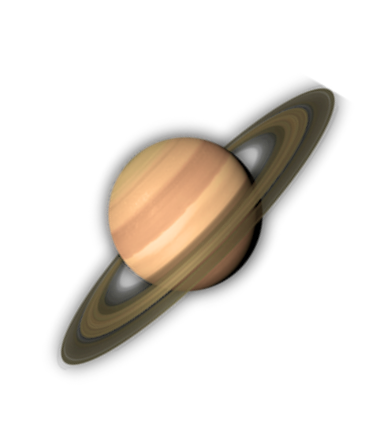
You can also rotate images in the clockwise direction using a variation of rotate, the rotate-cw function.
(rotate-cw 60 saturn)
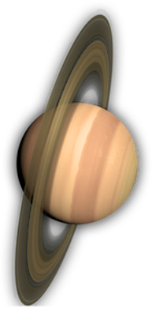
We also have the option to scale an image to make it larger or smaller.
The scale function has two parametes:
(scale factor image)
The scale factor is the amount by which an image is either increased or decreased.
A number between 0 and 1 will result in an image smaller than the original, and a number larger than 1 will result in an image larger than the original.
Let's see this in action:
(scale 0.5 neptune)
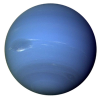
(scale 2 neptune)
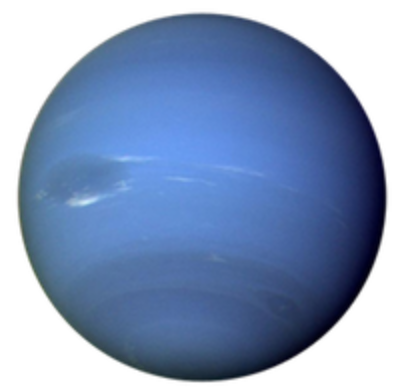
There are two versions of the flip function.
Flip-horizontal flips an image across the horizontal axis for a mirror image of your original image.
Flip-vertical flips the image across the vertical axis.
Each of these functions take only the image you want to manipulate.
(flip-horizontal jupiter)
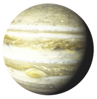
(flip-vertical jupiter)
 The last of the major editing functions is the cropping function.
There are quite a few variations of this function available.
Variations more precisely define how the image should be altered.
The last of the major editing functions is the cropping function.
There are quite a few variations of this function available.
Variations more precisely define how the image should be altered.
They include:
(crop-top image [number of pixels])
(crop-bottom image [number of pixels])
(crop-left image [number of pixels])
(crop-right image [number of pixels])
As you may have guessed, these work by cropping the specified section of a given image by the given number of pixels.
For example:
(crop-right moon 125)
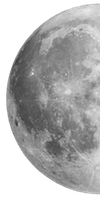
Placement
The placement functions control where, and in what order, images appear.
You can think of these functions as having few major types, then having some variations for each type.
Major types include:
Similar to the editing functions, there are variations for most of the functions in this category.
In this section, we are going to utilize our knowledge from what we've done previously in combination with new placement functions to build an image.
Specifically, a star.
First, we need to create some shapes.
You can create any shapes you want, in any size and color, but here's what we are going to be working with in our example.
You may want to stick close to the example this first time through and get more creative later.
(radial-star 10 10 5 "solid" "palegreen")
Can you picture what these shapes will look like based on the parameters that have been used?
(circle 8 "solid" "mediumaquamarine")
(circle 15 100 "lavender")
(ellipse 35 75 100 "violet")
(ellipse 50 100 100 "powderblue")
Our first placement function is overlay.
(overlay image1 image2 etc ...)
With overlay, objects appear directly on top of one another, with the first listed being the top-most visible one, through to the last on the bottom.
So let's create the center of our flower using this function.
(define blue-flower
(overlay
(radial-star 10 10 5 "solid" "red")
(circle 8 "solid" "gold")
(circle 15 100 "lavender")
)
)
What is our result?
Like the editing functions, the placement functions have variations that allow greater specificity and level of control over where the image appears.
- /align uses an xy to determine at what point the images are aligned.
- /offset moves the image a certain amount on the x and y axis’.
- /xy is similar but the images begin aligned at the top right (not the center).
Next we need to create the inner petals of our flower.
To do this, we will use an ellipse.
(ellipse 25 50 100 "purple")
That's one petal.
But we need more, and we need them to surround the center of our flower.
What function can we use to accomplish this?
Maybe one of the functions we learned earlier?
(rotate 25 (ellipse 35 75 100 "violet"))
Let's see what happens when we overlay the two:
(overlay
(ellipse 35 50 100 "violet")
(rotate 25 (ellipse 35 75 100 "violet"))
)
Can you guess what we might add next?
(overlay
(ellipse 35 50 100 "violet")
(rotate 25 (ellipse 35 75 100 "violet"))
(rotate 50 (ellipse 35 75 100 "violet"))
)
And what happens if we keep going?
(overlay
(ellipse 35 50 100 "violet")
(rotate 25 (ellipse 35 75 100 "violet"))
(rotate 50 (ellipse 35 75 100 "violet"))
(rotate 75 (ellipse 35 75 100 "violet"))
(rotate 100 (ellipse 35 75 100 "violet"))
(rotate 125 (ellipse 35 75 100 "violet"))
(rotate 150 (ellipse 35 75 100 "violet"))
(rotate 175 (ellipse 35 75 100 "violet"))
)
Look at the result!
Now we can add our petals underneath the center of the flower.
(define blue-flower
Now, we need to add an outer series of petals, using our bigger ellipse.
It's not too difficult to see how we might duplicate our process with the inner petals.
(overlay
(radial-star 10 10 5 "solid" "palegreen")
(circle 8 "solid" "mediumaquamarine")
(circle 15 100 "lavender")
(ellipse 35 50 100 "violet")
(rotate 25 (ellipse 35 75 100 "violet"))
(rotate 50 (ellipse 35 75 100 "violet"))
(rotate 75 (ellipse 35 75 100 "violet"))
(rotate 100 (ellipse 35 75 100 "violet"))
(rotate 125 (ellipse 35 75 100 "violet"))
(rotate 150 (ellipse 35 75 100 "violet"))
(rotate 175 (ellipse 35 75 100 "violet"))
)
)
(define blue-flower
(overlay
(radial-star 10 10 5 "solid" "palegreen")
(circle 8 "solid" "mediumaquamarine")
(circle 15 100 "lavender")
(ellipse 35 50 100 "violet")
(rotate 25 (ellipse 35 75 100 "violet"))
(rotate 50 (ellipse 35 75 100 "violet"))
(rotate 75 (ellipse 35 75 100 "violet"))
(rotate 100 (ellipse 35 75 100 "violet"))
(rotate 125 (ellipse 35 75 100 "violet"))
(rotate 150 (ellipse 35 75 100 "violet"))
(rotate 175 (ellipse 35 75 100 "violet"))
(ellipse 50 100 100 "powderblue")
(rotate 25 (ellipse 50 100 100 "powderblue"))
(rotate 50 (ellipse 50 100 100 "powderblue"))
(rotate 75 (ellipse 50 100 100 "powderblue"))
(rotate 100 (ellipse 50 100 100 "powderblue"))
(rotate 125 (ellipse 50 100 100 "powderblue"))
(rotate 150 (ellipse 50 100 100 "powderblue"))
(rotate 175 (ellipse 50 100 100 "powderblue"))
)
)
Take a look at our first flower!
Now, overlay is not the only way to combine shapes and images.
Underlay is another option.
(underlay image1 image2 etc ...)
In addition to having a similar template, this function operates very similarly, but in reverse order, with the first image listed appearing underneath all others.
Let's try it out by making another flower.
(define purple-rose
(underlay
(star-polygon 20 20 3 "solid" "mediumpurple")
(radial-star 20 60 50 "solid" "violet")
(rotate 18 (radial-star 15 50 30 "solid" "lightsteelblue"))
(circle 30 "solid" "plum")
(circle 25 "solid" "pink")
(radial-star 8 40 10 "solid" "peachpuff")
)
)
Here is what it looks like:
Do you see how the order of layers is reversed, as opposed to overlay?
Now we have two flowers.
What are our options for combining them in a scene?
Beside, as the name implies, places the first image beside another.
Above similarly places an image above another.
Empty-scene creates an outlined white rectangle, a 'scene' on which to place things.
Place-image, from the textbook “Places image onto scene with its center at the coordinates (x,y) and crops the resulting image so that it has the same size as scene.
The coordinates are relative to the top-left of scene."